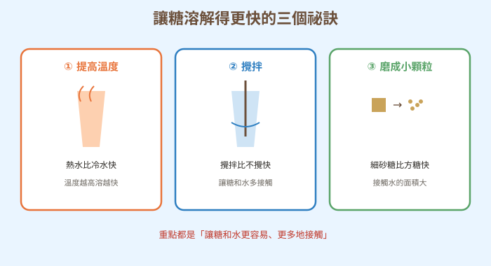
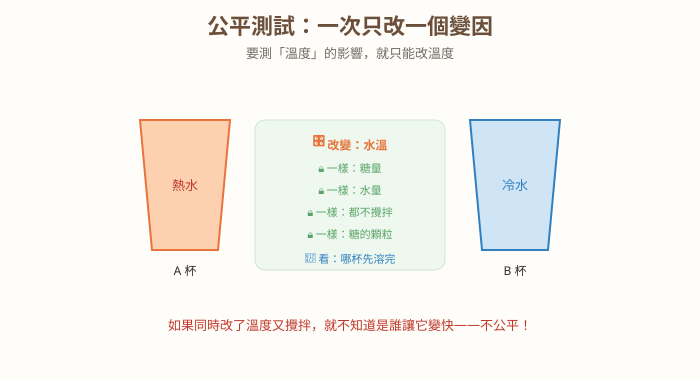
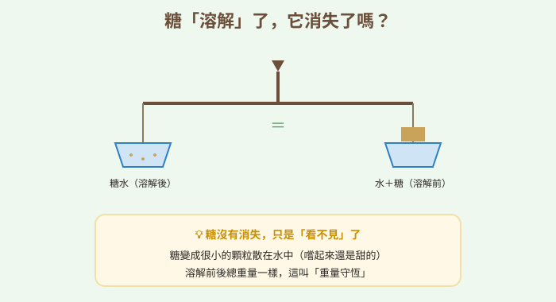

圖一（概念總覽圖）：影響溶解快慢的三因素

- 圖像目的
- 呈現三個加速溶解的因素與共同原理。
- 圖中應出現的元素
- 溫度（熱水）、攪拌、顆粒大小（方糖→細砂）三格；共同點說明。
- 必須標示的科學概念
- 溫度、攪拌、顆粒大小影響溶解快慢；本質是增加接觸。
- 圖說
- 「重點都是讓糖和水更容易、更多地接觸。」
- AI 繪圖提示詞
- 溫暖手繪科普風，三格：熱水、攪拌、方糖磨成細砂，各配說明。繁體中文。
- 避免畫錯的提醒
- 三因素正確；避免與「融化」混淆。
💡 想讓糖溶得快？先別急著攪——真正的科學偵探，一次只抓一個「嫌疑犯」！
| 適合年級 | 國小五年級 |
|---|---|
| 可銜接年級 | 五年級 → 國中溶液與濃度、科學方法 |
| 主題分類 | 科學方法與探究實驗 |
| 核心概念 | 變因控制（公平測試）；影響溶解快慢的因素 |
| 關鍵詞 | 操縱變因、應變變因、控制變因、公平測試、溶解、重量守恆 |
| 可銜接的國中概念 | 科學方法、溶液、溶解度與濃度 |
| 建議閱讀時間 | 約 20 分鐘 |
| 適合搭配的課堂活動 | 糖溶解變因實驗、公平測試設計練習 |
放學後，小狐同學和甲蟲博士在科學社團泡蜂蜜檸檬水。小狐同學把一大匙糖丟進冷水裡，等半天糖都沉在杯底不動，急得他直跺腳。甲蟲博士笑笑地在自己的杯子裡也加了糖，然後用熱水、還拿湯匙攪了幾下——糖「咻」一下就不見了！「不公平！」小狐同學大喊，「博士你的糖溶得好快，我的都不動，你是不是用了什麼魔法？」
「哪有魔法，」甲蟲博士得意地說，「我用了熱水，而且有攪拌啊！」小狐同學不服氣：「那到底是『熱水』讓它變快，還是『攪拌』讓它變快？說不定只要熱水就夠了，攪拌根本沒用；也可能是攪拌才有用，熱水沒差！」兩個人爭論不休，誰也說服不了誰。
「這樣吵下去也吵不出答案，」小狐同學抓抓頭，「博士你一次改了兩樣東西——又用熱水、又攪拌，我怎麼知道到底是誰的功勞？如果我想搞清楚『熱水』有沒有效，是不是應該……只改熱水這一項，其他都保持一樣？」他越說眼睛越亮，「對！要公平比較才行！」
黑熊老師剛好聽到，忍不住鼓掌：「小狐，你剛剛講出了科學實驗最重要的祕訣！要找出到底是誰讓溶解變快，就得像偵探辦案一樣——一次只抓一個嫌疑犯，其他條件通通保持一樣。這叫『控制變因、公平測試』。今天，我們就來當一次溶解偵探，把讓糖溶得快的祕密一個一個抓出來！」
黑熊老師，博士又用熱水又攪拌，我怎麼知道是哪一個讓糖溶得快？
問得好！這就是為什麼科學實驗要「一次只改一個條件」。想知道熱水有沒有效，就準備兩杯：一杯熱水、一杯冷水，糖量一樣、都不攪拌、糖的顆粒也一樣，只差在水溫。這樣才能確定是「溫度」造成的差別。
喔！所以「故意改變的那一個」（水溫）就是重點，其他要保持一樣。這些名字怎麼叫？
我們故意改變的那一個叫「操縱變因」（水溫）；因為它而跟著改變、我們要觀察的結果叫「應變變因」（溶解快慢）；其他保持一樣的條件叫「控制變因」（糖量、水量、攪不攪、顆粒大小）。
哼，這太囉唆了！想溶得快，我就熱水、攪拌、磨成粉、加更多水，全部一起用，保證超快！管它哪個有效，反正快就對了！
迷思怪獸，如果你只是「想溶快」，全部一起用當然可以。但如果你想「搞清楚是哪個因素有效」，全部一起改就永遠不知道答案——因為你分不出是誰的功勞。做研究和「隨便弄快」是兩回事喔。
原來如此！那到底哪些東西會讓糖溶得比較快？
經過公平測試會發現：提高溫度、攪拌、把糖磨成小顆粒，都能讓糖溶得比較快。它們的共同點是「讓糖和水更容易、更多地接觸」。
補充一個重要觀念：糖溶解不見了，可不是「消失」喔！它只是變成很小很小的顆粒，均勻散在水裡（所以水還是甜的）。而且溶解前後，糖水的總重量和「水加糖」是一樣的，這叫「重量守恆」。溶解也不是「融化」——融化是靠加熱把固體變液體，溶解是溶進水裡，兩個不一樣。
那我們就來當溶解偵探！設計三組公平測試，分別找出「溫度」「攪拌」「顆粒大小」對溶解快慢的影響，記得每次只改一個變因。用溫水就好、別用滾燙的熱水以免燙傷喔。
想知道「什麼會讓糖溶得比較快」，要像偵探辦案一樣做公平測試：一次只改一個條件，其他都保持一樣。故意改的那個叫操縱變因，跟著變、要觀察的結果叫應變變因，保持一樣的叫控制變因。實驗會發現：熱水、攪拌、磨成小顆粒都能讓糖溶得快。糖溶解不是消失，只是變小散在水裡（水還是甜的）。
科學探究要控制變因以確保公平比較：僅改變操縱變因，觀察應變變因，其餘控制變因維持一致，才能判斷因果。影響溶解快慢的主要因素：溫度（越高越快）、攪拌（增加接觸與更新）、顆粒大小（越小表面積越大越快）。溶解是溶質均勻分散於溶劑形成溶液，非物質消失；溶解前後總質量不變（重量守恆）。溶解與熔化不同：熔化是固態受熱變液態，溶解是溶質分散於溶劑中。
公平測試對應「控制變數」的實驗設計，是建立因果推論的基礎；理想上應重複實驗、量化測量並考慮誤差。溶解速率受溫度、攪拌、表面積影響（動力學）；而某溫度下能溶解的最大量為溶解度（熱力學，多數固體隨溫度升高而增大）。溶解遵守質量守恆。國中將以溶液濃度（質量百分濃度等）、溶解度曲線與分離方法（過濾、結晶、蒸發）進一步探討，並強化變因控制與數據分析。



（本篇分鏡場景插圖籌備中，以下為分鏡腳本；場景圖可依提示詞產出，作法同其他文章。）
| 適合年級 | 五年級 |
|---|---|
| 材料 | 透明杯數個、方糖與細砂糖、溫水與冷水（溫水由老師/家長準備）、湯匙、碼表、量匙、紀錄表 |
每組各一個：水溫／有無攪拌／糖的顆粒大小。
糖完全溶解所花的時間。
該組沒有要測的其他條件（糖量、水量、杯子、開始時間等）都保持一樣。
| 測試組 | 操縱變因 | 結果（哪個快） |
|---|---|---|
| 溫度 | 溫水 vs 冷水 | |
| 攪拌 | 攪 vs 不攪 | |
| 顆粒 | 方糖 vs 細砂糖 |
溫水比冷水快、有攪拌比不攪快、細砂糖比方糖快。因為這三種做法都能「增加糖和水的接觸」，讓糖更快分散到水中。每組只改一個變因、其他保持一樣（公平測試），才能確定是那個因素造成的差別。這也示範了科學研究「控制變因」的重要——它讓我們能分辨究竟是誰造成了結果。
⚠️ 安全提醒：使用「溫水」即可（約 40–50°C），由老師或家長準備，不要用滾燙的熱水以免燙傷；玻璃杯小心打破，建議用塑膠杯；實驗用的糖水可觀察但適量、避免浪費；桌面弄濕擦乾，結束後洗手。
👾 迷思說法：想知道哪個因素有效，全部一起改最快最好。
為什麼容易誤解：全部一起用確實溶得快，感覺很有效率。
✅ 正確說法：如果一次改很多，就分不出是哪個因素造成的。要「一次只改一個變因、其他保持一樣」，才能公平地找出答案。
可以怎麼驗證：試著同時改溫度和攪拌，你會發現無法判斷是誰讓它變快。
👾 迷思說法：糖溶解不見了，就是糖消失、變沒了。
為什麼容易誤解：糖看不見了，好像不見了。
✅ 正確說法：糖沒有消失，它變成很小的顆粒均勻散在水裡（所以水還是甜的）。溶解前後總重量一樣（重量守恆）。
可以怎麼驗證：嚐嚐糖水是甜的；用天平量溶解前後總重量會相同。
👾 迷思說法：溶解和融化是同一件事。
為什麼容易誤解：兩個都讓固體「不見」。
✅ 正確說法：不一樣。融化是固體受熱變成液體（如冰變水）；溶解是固體分散到水（溶劑）裡形成溶液（如糖溶進水）。
可以怎麼驗證：糖在常溫的水裡就會溶解（不用加熱到熔化）；冰不加熱不會自己變水。
👾 迷思說法：攪拌會「增加糖的量」，所以攪拌後比較甜。
為什麼容易誤解：攪拌後很快變甜，好像糖變多了。
✅ 正確說法：攪拌只是讓糖「溶得比較快、比較均勻」，不會增加糖的量。糖多少就是多少，甜度取決於加了多少糖。
可以怎麼驗證：兩杯加一樣多的糖，一杯攪一杯不攪，等都溶完後甜度一樣。
👾 迷思說法：水越熱，糖可以「無限量」一直溶下去。
為什麼容易誤解：熱水溶得快，就以為能溶無限多。
✅ 正確說法：溫度高「通常能溶更多」，但仍有上限。加太多糖，超過能溶的量，多的糖還是會沉在杯底溶不掉。
可以怎麼驗證：一直加糖到攪拌後仍有糖沉底，就是達到上限了。
1. 要公平地找出「溫度」對溶解快慢的影響，兩杯應該只有什麼不同？
(A) 糖量 (B) 水溫 (C) 攪不攪 (D) 杯子大小
答案：B。只改水溫（操縱變因），其他保持一樣。
2. 實驗中「故意去改變的那一個條件」叫什麼？
(A) 操縱變因 (B) 應變變因 (C) 控制變因 (D) 意外變因
答案：A。操縱變因是故意改變的那一個。
3. 下列哪個做法「不會」讓糖溶得比較快？
(A) 用熱水 (B) 攪拌 (C) 磨成細顆粒 (D) 把杯子塗成紅色
答案：D。杯子顏色與溶解快慢無關。
4. 糖溶解在水裡後，糖去哪了？
(A) 消失了 (B) 變成很小的顆粒散在水中 (C) 變成水 (D) 跑到空氣裡
答案：B。糖分散在水中，未消失（水仍是甜的）。
5. 關於「溶解」和「融化」，下列何者正確？
(A) 是同一件事 (B) 溶解是固體分散到水裡，融化是固體受熱變液體 (C) 都要加熱 (D) 都會讓糖變多
答案：B。兩者機制不同。
1. 為什麼做實驗要「一次只改一個變因」？
因為一次只改一個，才能確定結果是那個因素造成的；同時改很多就分不出是誰的功勞，不公平。
2. 讓糖溶得比較快的三個方法是什麼？它們的共同點是什麼？
提高溫度、攪拌、磨成小顆粒；共同點是增加糖和水的接觸，讓糖更快分散到水中。
3. 迷思怪獸說「糖溶解就是消失了」，你要怎麼糾正牠？
糖沒有消失，只是變成小顆粒散在水裡（水還是甜的）；溶解前後總重量一樣（重量守恆）。
1. 小狐同學想證明「攪拌能讓糖溶得更快」，卻不小心一杯用熱水、一杯用冷水。這個實驗有什麼問題？該怎麼改才公平？
他同時改了「攪拌」和「水溫」兩個變因，無法確定是攪拌還是溫度造成差別，不公平。要改成：兩杯水溫一樣（都冷水或都溫水）、糖量一樣，只差在一杯攪、一杯不攪，才能確定攪拌的效果。
2. 你想幫家人找出「哪一種即溶咖啡溶得最快」。請設計一個公平的比較方法，並說出你會控制哪些變因。
操縱變因：咖啡品牌；應變變因：完全溶解的時間；控制變因：水溫、水量、咖啡粉量、攪拌方式與次數、開始計時點都相同，一次只換品牌。這樣比出來才公平。（合理即可）
| 向度 | 待加強（1） | 通過（2） | 優秀（3） |
|---|---|---|---|
| 變因控制 | 同時改多個變因 | 能一次只改一個變因 | 能完整規劃並解釋公平性 |
| 概念理解 | 認為溶解即消失 | 能說出影響因素 | 能連結接觸面與重量守恆 |
| 證據與推論 | 結論無依據 | 能由結果下結論 | 能應用於新情境設計實驗 |
| 檢核項目 | 結果 | 備註 |
|---|---|---|
| 科學概念是否正確 | ✅ | 三種變因、影響溶解快慢因素、溶解非消失、重量守恆、溶解≠融化、溶解度有上限，敘述正確。 |
| 是否符合年級理解程度 | ✅ | 五年級以公平測試切入，溶解度曲線留待國中。 |
| 是否有錯誤或過度簡化的比喻 | ✅ | 「偵探抓嫌疑犯」比喻恰當；已澄清溶解非消失、非融化。 |
| 是否清楚區分觀察、推論與解釋 | ✅ | 本篇核心即在變因控制與公平比較。 |
| 圖像提示詞是否可能造成誤解 | ✅ | 只呈現單一操縱變因、天平等重、與融化區分。 |
| 實驗是否安全 | ✅ | 使用溫水非滾水、建議塑膠杯，安全提醒充分。 |
| 是否需要補充資料來源 | ✅ | 對應學習表現（變因控制）與 INe-Ⅲ-4；見教師補充。 |
| 是否適合轉成 HTML 網頁 | ✅ | 結構完整，含互動測驗與摺疊區。 |